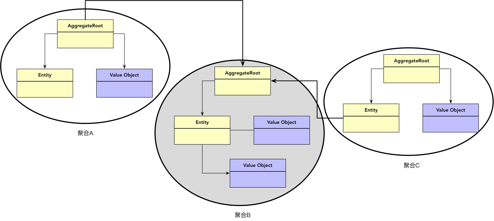

- 001 「战略篇」访谈 DDD 和微服务是什么关系？.md.html
- 002 「战略篇」开篇词：领域驱动设计，重焕青春的设计经典.md.html
- 003 领域驱动设计概览.md.html
- 004 深入分析软件的复杂度.md.html
- 005 控制软件复杂度的原则.md.html
- 006 领域驱动设计对软件复杂度的应对（上）.md.html
- 007 领域驱动设计对软件复杂度的应对（下）.md.html
- 008 软件开发团队的沟通与协作.md.html
- 009 运用领域场景分析提炼领域知识（上）.md.html
- 010 运用领域场景分析提炼领域知识（下）.md.html
- 011 建立统一语言.md.html
- 012 理解限界上下文.md.html
- 013 限界上下文的控制力（上）.md.html
- 014 限界上下文的控制力（下）.md.html
- 015 识别限界上下文（上）.md.html
- 016 识别限界上下文（下）.md.html
- 017 理解上下文映射.md.html
- 018 上下文映射的团队协作模式.md.html
- 019 上下文映射的通信集成模式.md.html
- 020 辨别限界上下文的协作关系（上）.md.html
- 021 辨别限界上下文的协作关系（下）.md.html
- 022 认识分层架构.md.html
- 023 分层架构的演化.md.html
- 024 领域驱动架构的演进.md.html
- 025 案例 层次的职责与协作关系（图文篇）.md.html
- 026 限界上下文与架构.md.html
- 027 限界上下文对架构的影响.md.html
- 028 领域驱动设计的代码模型.md.html
- 029 代码模型的架构决策.md.html
- 030 实践 先启阶段的需求分析.md.html
- 031 实践 先启阶段的领域场景分析（上）.md.html
- 032 实践 先启阶段的领域场景分析（下）.md.html
- 033 实践 识别限界上下文.md.html
- 034 实践 确定限界上下文的协作关系.md.html
- 035 实践 EAS 的整体架构.md.html
- 036 「战术篇」访谈：DDD 能帮开发团队提高设计水平吗？.md.html
- 037 「战术篇」开篇词：领域驱动设计的不确定性.md.html
- 038 什么是模型.md.html
- 039 数据分析模型.md.html
- 040 数据设计模型.md.html
- 041 数据模型与对象模型.md.html
- 042 数据实现模型.md.html
- 043 案例 培训管理系统.md.html
- 044 服务资源模型.md.html
- 045 服务行为模型.md.html
- 046 服务设计模型.md.html
- 047 领域模型驱动设计.md.html
- 048 领域实现模型.md.html
- 049 理解领域模型.md.html
- 050 领域模型与结构范式.md.html
- 051 领域模型与对象范式（上）.md.html
- 052 领域模型与对象范式（中）.md.html
- 053 领域模型与对象范式（下）.md.html
- 054 领域模型与函数范式.md.html
- 055 领域驱动分层架构与对象模型.md.html
- 056 统一语言与领域分析模型.md.html
- 057 精炼领域分析模型.md.html
- 058 彩色 UML 与彩色建模.md.html
- 059 四色建模法.md.html
- 060 案例 订单核心流程的四色建模.md.html
- 061 事件风暴与业务全景探索.md.html
- 062 事件风暴与领域分析建模.md.html
- 063 案例 订单核心流程的事件风暴.md.html
- 064 表达领域设计模型.md.html
- 065 实体.md.html
- 066 值对象.md.html
- 067 对象图与聚合.md.html
- 068 聚合设计原则.md.html
- 069 聚合之间的关系.md.html
- 070 聚合的设计过程.md.html
- 071 案例 培训领域模型的聚合设计.md.html
- 072 领域模型对象的生命周期-工厂.md.html
- 073 领域模型对象的生命周期-资源库.md.html
- 074 领域服务.md.html
- 075 案例 领域设计模型的价值.md.html
- 076 应用服务.md.html
- 077 场景的设计驱动力.md.html
- 078 案例 薪资管理系统的场景驱动设计.md.html
- 079 场景驱动设计与 DCI 模式.md.html
- 080 领域事件.md.html
- 081 发布者—订阅者模式.md.html
- 082 事件溯源模式.md.html
- 083 测试优先的领域实现建模.md.html
- 084 深入理解简单设计.md.html
- 085 案例 薪资管理系统的测试驱动开发（上）.md.html
- 086 案例 薪资管理系统的测试驱动开发（下）.md.html
- 087 对象关系映射（上）.md.html
- 088 对象关系映射（下）.md.html
- 089 领域模型与数据模型.md.html
- 090 领域驱动设计对持久化的影响.md.html
- 091 领域驱动设计体系.md.html
- 092 子领域与限界上下文.md.html
- 093 限界上下文的边界与协作.md.html
- 094 限界上下文之间的分布式通信.md.html
- 095 命令查询职责分离.md.html
- 096 分布式柔性事务.md.html
- 097 设计概念的统一语言.md.html
- 098 模型对象.md.html
- 099 领域驱动设计参考过程模型.md.html
- 100 领域驱动设计的精髓.md.html
- 101 实践 员工上下文的领域建模.md.html
- 102 实践 考勤上下文的领域建模.md.html
- 103 实践 项目上下文的领域建模.md.html
- 104 实践 培训上下文的业务需求.md.html
- 105 实践 培训上下文的领域分析建模.md.html
- 106 实践 培训上下文的领域设计建模.md.html
- 107 实践 培训上下文的领域实现建模.md.html
- 108 实践 EAS 系统的代码模型.md.html
- 109 后记：如何学习领域驱动设计.md.html
069 聚合之间的关系
聚合之间的关系
无论聚合是否表达了领域概念的完整性，我们都要清醒地认识到这种所谓的“完整”必然是相对的。如果说在领域分析模型中，每个体现了领域概念的类是模型的最小单元，那么在领域设计模型中，聚合才是模型的最小单元。我们需要一以贯之地遵守“分而治之”的思想，合理地划分聚合是“分”的体现，思考聚合之间的关系则是“合”的诉求。因此，在讨论聚合的设计过程之前，我们还需要先理清聚合之间的关系该如何设计。
论及聚合之间的关系，无非就是判断彼此之间的引用采用什么形式。分为两种：
- 聚合根的对象引用
- 聚合根身份标识的引用
Eric Evans 并没有规定聚合引用一定要采用什么形式，只是明确了聚合内外部之间协作的基本规则：
- 聚合外部的对象不能引用除根实体之外的任何内部对象
- 聚合内部的对象可以保持对其他聚合根的引用
这意味着聚合根实体可以被当前聚合的外部对象包括别的聚合的内部对象所引用。自然，无论聚合之间为何种关系，采用哪种引用方式，都需要限制聚合之间不允许出现双向导航的关系。如下图所示，聚合 A 的根实体直接访问了聚合 B 根实体的实例引用，聚合 C 的内部实体也直接访问了聚合 B 根实体的实例引用，但三者之间并没有形成双向导航：

如果聚合之间采用对象引用的形式，就会形成由聚合组成的对象图。由于聚合界定了边界，使得对象图的关系要更加清晰简单，对象之间的耦合强弱关系也一目了然。对象引用的形式使得从一个聚合遍历到另一个聚合非常方便，例如，当 Customer 引用了由 Order 聚合根组成的集合对象时，就可以通过 Customer 直接获得该客户所有的订单：
public class Customer extends AggregateRoot<Customer> {
private List<Order> orders;
public List<Order> getOrders() {
return this.orders;
}
}
这一实现存在的问题是：由谁负责获得当前客户的所有订单？领域驱动设计引入了资源库来管理聚合的生命周期。如果由 CustomerRepository 管理 Customer 聚合的生命周期，OrderRepository 管理 Order 聚合的生命周期，就意味着 CustomerRepository 在获得 Customer 对象的同时，还要“求助于”OrderRepository 去获得该客户的所有订单，然后将返回的订单设值给客户对象。这是何苦来由？毕竟，调用者通过向 OrderRepository 传递当前客户的身份标识 customerId，即可获得指定客户的所有订单，无需借助于 Customer 聚合根：
//client
List<Order> orders = orderRepo.allOrdersBy(customerId);
因此，一个聚合的根实体并无必要持有另一个聚合根实体的引用，若需要与之协作，可以通过该聚合根的身份标识由资源库访问获得。在分析业务场景以明确职责时，我们还需要思考究竟谁才是该职责的调用者？针对“获取客户订单”场景，表面上调用者是客户，但从分层架构的角度看，实则是由 OrderController 响应用户界面的请求而发起调用，对应的应用服务可直接通过 OrderRepository 获得客户订单：
public class OrderAppService {
@Repository
private OrderRepository orderRepo;
public List<Order> customerOrders(CustomerId customerId) {
return orderRepo.allOrdersBy(customerId);
}
}
再来看聚合内部对象该如何引用别的聚合根。考虑 Order 聚合内 OrderItem 与 Product 之间的关系。毫无疑问，采用对象引用最为直接：
public class OrderItem extends Entity<OrderItemId> {
// Product 为商品聚合的根实体
private Product product;
private Quantity quantity;
public Product getProduct() {
return this.product;
}
}
如此实现，就可直接通过 OrderItem 引用的 Product 聚合根实例遍历商品信息：
List<OrderItem> orderItems = order.getOrderItems();
orderItems.forEach(oi -> System.out.println(oi.getProduct().getName());
这一实现存在同样问题：谁来负责为 OrderItem 加载 Product 聚合根的信息？OrderRepository 没有能力访问 Product 聚合，也不可能依赖 ProductRepository 来完成商品信息的加载，管理 Product 生命周期的职责也不可能交给处于 Order 聚合的内部实体 OrderItem。如果将加载的职责转移，就需要在 OrderItem 内部，引用 ProductId 而非 Product：
public class OrderItem extends Entity<OrderItemId> {
private ProductId productId;
}
凡事有利有弊！通过身份标识引用聚合根固然解除了彼此之间强生命周期的依赖，避免了对被引用聚合对象图的加载；同时也带来了弊病：让 OrderItem 向 Product 的遍历变得复杂。怎么办？通常，我不建议将实体与值对象设计为依赖资源库的领域对象，这就意味着在 Order 聚合内部，没有 ProductRepository 这样的资源库帮助订单项根据 ProductId 去查询商品的信息。因此，若要通过 OrderItem 的 ProductId 获得商品信息，有两种方式：
- 需要时，由调用者根据 OrderItem 包含的 ProductId 显式调用 ProductRepository，查询 Product 聚合
- 定义 ProductInOrder 实体对象，它相当于是 Product 聚合的一个克隆或者投影，属于 Order 聚合中的内部实体，你也可以认为是分属两个限界上下文的 Product 类
第一种方式要求调用者在获得 Order 聚合并遍历内部的 OrderItem 时，每次根据 OrderItem 持有的 ProductId 获得商品信息。这个工作牵涉到聚合、资源库之间的协作，由于没有领域对象同时包含 OrderItem 与 Product，就将由数据契约对象持有它们的值，即定义 OrdersReponse。数据契约对象就是前面章节提到的 DTO 对象，该职责可以由应用服务来组装：
public class OrderAppService {
@Repository
private Repository orderRepository;
@Repository
private Repository productRepository;
public OrdersResponse customerOrders(CustomerId customerId) {
List<Order> orders = orderRepository.allOrdersBy(customerId);
List<OrderResponse> orderResponses = orders.stream
.map(o -> buildFrom(o))
.collect(Collectors.toList());
return new OrdersReponse(orderResponses);
}
private OrderResponse buildForm(Order order) {
OrderResponse orderResponse = transformFrom(order);
List<OrderItemResponse> orderItemResponses = order.getOrderItems.stream()
.map(oi -> transformFrom(oi))
.collect(Collectors.toList());
orderResponse.addAll(orderItemResponses);
return orderResponse;
}
private OrderResponse transformFrom(Order order) { ... }
private OrderItemResponse transformFrom(OrderItem orderItem) {
OrderItemResponse orderItemResponse = new OrderItemResponse();
...
Product product = productRepository.productBy(orderItem.getProductId());
orderItemResponse.setProductId(product.getId());
orderItemResponse.setProductName(product.getName());
...
}
}
若担心每次根据 ProductId 查询商品信息带来可能的性能损耗，可以考虑为 ProductRepository 的实现提供缓存功能。倘若 Order 聚合与 Product 聚合属于不同的微服务（即跨进程边界的限界上下文），则查询商品信息的性能还要考虑网络通信的成本，引入缓存就更有必要了。既然 Product 聚合属于另外一个微服务，Order 与 Product 之间的协作就不再是进程内通信，也就不会直接调用 ProductRepository，而是与定义在订单微服务内的防腐层接口 ProductService 协作。该接口定义在 productcontext/interface 包中，属于当前限界上下文的南向网关。
OrderAppService 返回的 OrderResponse 对象组合了订单、订单项与商品的信息。从对象图的角度看，这三个对象之间采用的是对象引用。由于 OrderResponse 属于远程服务层或应用层的数据契约对象，因此它的设计原则和聚合的设计原则风马牛不相及，不可同等对待。
第二种方式假定了一种业务场景，即买家一旦从购物车下订单，在创建好的订单中，订单项包含的商品信息就会脱离和商品库之间的关系，无需考虑二者的同步。这时，我们可以在订单聚合中引入一个 ProductInOrder 实体类，并被 OrderItem 直接引用。ProductInOrder 的数据会持久化到订单数据库中，并与 Product 聚合根实体共享相同的 ProductId。由于 ProductInOrder 属于 Order 聚合内的实体对象，订单的资源库在管理 Order 聚合的生命周期时，会建立 OrderItem 指向 ProductInOrder 对象的导航。
社区对聚合之间的关系已有定论，皆认为聚合之间应通过身份标识进行引用。这一原则看似与面向对象设计思想相悖，毕竟面向对象正是借助对象之前的协作关系产生威力，然而，一旦对象图失去聚合边界的约束，就可能随着系统规模的扩大变成一匹脱缰的野马，难以理清楚错综复杂的对象关系。在引入聚合之后，不能将边界视为无物，而是要起到边界的保护与约束作用，这就是规定聚合协作关系的缘由。若能保证聚合之间通过身份标识而非聚合根引用进行协作，就能让聚合更好地满足完整性、独立性、不变量与事务 ACID 等本质特征。
若是在单体架构下，由于不牵涉对象之间的分布式通信，即便对象之间交织在一起，影响的仅仅是程序的逻辑架构；微服务架构则不然，若领域层的类分散在不同服务中，我们却没有定义边界去约束它们，就可能会让跨进程的对象引用变得泛滥，如果再引入事务的一致性问题，情况就变得更加严峻了。在此种情况，聚合的价值会更加凸显。
这里需要辨明聚合、限界上下文与微服务之间的关系。极端情况下，它们在逻辑上的领域边界完全重合：一个聚合就是一个限界上下文，一个限界上下文就是一个微服务。但这种一对一的映射关系并非必然，多数情况下，一个限界上下文可能包含多个聚合，一个微服务也可能包含多个限界上下文，反之，则绝对不允许一个聚合分散在不同的限界上下文，更不用说微服务了。由此就能保证同一个聚合和同一个限界上下文中的领域对象一定是在同一个进程边界内，而聚合之间的协作是否跨进程边界，又决定了事务的一致性问题。参考下图，一个限界上下文包含了两个聚合，每个聚合自有其事务边界。同一进程中的聚合 A 与聚合 B、聚合 C 与聚合 D 之间的协作可采用本地事务保证数据的强一致性；聚合 B 和聚合 C 的协作为跨进程通信，需要采用柔性事务保证数据的最终一致性：
因此，聚合之间通过身份标识进行引用，可以避免跨进程边界的对象引用，而聚合边界与进程边界又共同决定了事务的处理方式。这是一种设计约束，表面看来，它似乎给领域设计模型带上了镣铐，让模型对象之间的协作变得不那么简单直接，带来的价值却是让领域设计模型变得更加清晰、可控且纯粹。倘若系统为单体架构，若在设计时严格按照这一设计约束引入了聚合，当未来需要迁移到微服务架构时，也将因为聚合而降低重构或重写的成本。从这个角度讲，说聚合是领域驱动战术设计中最为重要的设计要素也不为过。